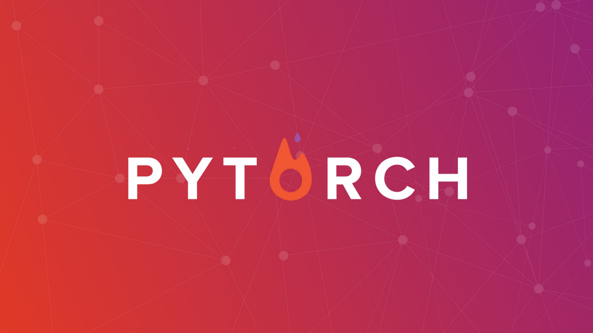

Introduction
When it comes to deep learning frameworks, the landscape offers several compelling options. TensorFlow, JAX, and PyTorch each have their strengths, but after working extensively with multiple frameworks, PyTorch has become my go-to choice for deep learning projects. Here’s why this dynamic framework continues to win over researchers and practitioners alike.
The Power of Dynamic Computation Graphs
PyTorch’s defining feature is its dynamic computation graph, also known as “define-by-run.” Unlike static graphs where you must define the entire network architecture upfront, PyTorch builds the computational graph on-the-fly as operations execute. This approach offers unprecedented flexibility for complex architectures and experimental research.
Consider debugging a recurrent neural network with variable sequence lengths. In PyTorch, you can step through your code line by line, inspect tensors at any point, and modify the network behavior based on runtime conditions.
This dynamic nature makes PyTorch feel more like writing regular Python code rather than wrestling with a rigid framework.
Pythonic Design Philosophy
PyTorch embraces Python’s design principles, making it intuitive for developers already familiar with the language. The API feels natural and follows Python conventions closely. Operations like tensor manipulation, automatic differentiation, and model definition align with how Python developers expect to write code.
The framework integrates seamlessly with the broader Python ecosystem:
- NumPy: Arrays convert effortlessly to PyTorch tensors
- Matplotlib: Works perfectly for visualization
- Standard debugging tools: Function as expected
This integration reduces the learning curve and allows developers to leverage existing Python skills.
Research-First Mentality
PyTorch originated from the research community and maintains strong connections to academic work. The framework prioritizes flexibility and experimentation over rigid optimization, making it ideal for cutting-edge research where novel architectures and training procedures are constantly emerging.
Major research breakthroughs often appear first in PyTorch implementations. The framework’s flexibility allows researchers to quickly prototype new ideas without fighting against framework constraints.
This research-first approach has created a virtuous cycle where PyTorch continues to attract top researchers, leading to more innovations and better tooling.
Exceptional Debugging Experience
Debugging deep learning models can be notoriously challenging, but PyTorch makes this process more manageable. Since PyTorch code executes imperatively, you can use standard Python debugging tools effectively:
pdbdebugger- Print statements
- IDE debuggers
The framework provides excellent error messages that point to the exact line where issues occur. When tensor shapes don’t match or operations fail, PyTorch gives clear, actionable feedback rather than cryptic error messages buried deep in the framework’s internals.
Mature Ecosystem and Community
PyTorch has cultivated a vibrant ecosystem of libraries and tools:
| Library | Purpose |
|---|---|
| PyTorch Lightning | Simplifies training loops and experiment management |
| Transformers (Hugging Face) | State-of-the-art pre-trained models |
| TorchVision | Computer vision utilities |
| TorchText | Natural language processing tools |
| TorchAudio | Audio processing capabilities |
The community actively contributes tutorials, examples, and extensions. PyTorch’s documentation is comprehensive and includes practical examples alongside API references. The official tutorials cover everything from basic tensor operations to advanced topics like distributed training and model optimization.
Performance and Production Readiness
While PyTorch initially focused on research flexibility, recent versions have significantly improved production capabilities:
- TorchScript: Converts dynamic PyTorch models to static representations
- TorchServe: Provides model serving infrastructure
- PyTorch Mobile: Enables deployment on mobile devices
- JIT Compiler: Optimizes computation graphs
- GPU Utilization: Efficient resource management
- Competitive Performance: Matches or exceeds alternatives
For most applications, PyTorch’s performance matches or exceeds alternatives while maintaining superior flexibility.
Automatic Differentiation Done Right
PyTorch’s automatic differentiation system, Autograd, elegantly handles gradient computation. The system tracks operations on tensors and builds a computational graph automatically. Computing gradients requires just a single .backward() call.
# Example of PyTorch's automatic differentiation
import torch
# Create tensors with gradient tracking
x = torch.tensor([2.0], requires_grad=True)
y = torch.tensor([3.0], requires_grad=True)
# Define computation
z = x * y + x**2
# Compute gradients automatically
z.backward()
print(f"dz/dx = {x.grad}") # dz/dx = [7.0]
print(f"dz/dy = {y.grad}") # dz/dy = [2.0]The differentiation system integrates smoothly with control flow, making it easy to implement complex architectures with conditional execution, loops, and dynamic behavior. This capability proves essential for advanced architectures like attention mechanisms and recursive networks.
Growing Industry Adoption
While TensorFlow dominated early industry adoption, PyTorch has gained significant ground in production environments. Major companies using PyTorch include:
- Meta (Facebook)
- Tesla
- OpenAI
Many companies now choose PyTorch for both research and production, eliminating the need to translate models between frameworks. This unified approach reduces complexity and accelerates the path from research to deployment.
Future-Proof Architecture
PyTorch’s design principles position it well for future developments in deep learning. The framework’s flexibility accommodates new paradigms without requiring major architectural changes:
- Few-shot learning
- Meta-learning
- Neural architecture search
The PyTorch team actively develops new features while maintaining backward compatibility. Regular releases introduce performance improvements, new operators, and enhanced tooling without breaking existing code.
Making the Choice
Choosing PyTorch means prioritizing:
- Flexibility - Dynamic computation graphs
- Ease of use - Pythonic design
- Modern development practices - Excellent debugging and tooling
The framework excels for research, education, and increasingly for production applications. Its dynamic nature, excellent debugging capabilities, and strong ecosystem make it a compelling choice for deep learning projects.
For anyone starting a new deep learning project or considering a framework switch, PyTorch offers a modern, flexible foundation that grows with your needs and supports both experimentation and deployment.
While other frameworks have their merits, PyTorch’s combination of research-friendly design, production readiness, and vibrant community creates a compelling package for deep learning practitioners. The framework continues evolving rapidly while maintaining its core philosophy of putting developers first.
This guide reflects the current state of PyTorch and its ecosystem. The deep learning landscape continues to evolve, but PyTorch’s foundational strengths position it well for future developments.